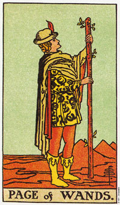

权杖(国王)暗示经由自律而成功。
权杖(国王)描绘一个强壮的人，能够透过他的意志力来领导及统御别人。他对自己有坚强的信念，因为他的信心是建立在自身的经验上。他知道他的方法有效，因为他尝试过也试验过这种方法。
他为人诚实、积极而坦率，而且经常愿意接受新挑战。他认为过程比结果还重要，而且拒绝任何拖泥带水的挑战。
权杖(国王)代表火中土的部分。“土”喜欢务实的、可确知的事物，而且一旦投入时间和努力就会要求具体的成果。这并非暗示他是一个极具耐心的人，他只是比过去的骑士时代更懂得自律罢了。
国王形容一个热诚、有活力并且直言不讳的人。一般而言，他可能会有蓝眼珠和红棕色的头发。通常是个超过三十岁的男人，不过如果这张牌指的是牧羊座的人是例外。当这张牌和皇帝与宝剑骑士一起出现时，他就是一张代表牧羊座的牌。假设这张牌是只牧羊座的人，他们就可能小于三十岁，或指女人。
白羊座的课题就是自律的课题，而国王就是一个这种例子。他坐下来，静候最佳时机，当它到来时，他已经养精蓄锐并准备好尽全力经营了。他可能没有办法忍受那些没有像他这样经营人生的人，特别是当他面对脆弱或绝望时，因为这些并非他既存的经验。他是一个已经能够驾驭内心之火的人，而且由于土的影响，已经产生正面、明确的结果。他尚未丧失骑士对行动的热爱，然而他已经知道行动会决定结果。
这张牌上的狮子象征国王的内在力量，而大衣上的火精灵的尾巴已经伸进嘴里形成一个圆圈了，这象征他对目标与火元素的可能性的理解。
大体上的意义
权杖(国王)代表透过自律和耐心而成功。自律可以让你超越自己，因此逆就会有充分的时间和体力来掌握更好的机会，让你完成已着手之事。这张牌形容一个坚强，而有时独断的人，通常他的言行都很坦率，适合从事销售或任何以目标为趋向的工作。
两性关系上的意义
这名男子喜欢带有挑战性的两性关系，和权杖皇后是天生一对。在效率方面，你可以看见他坐在他的王座上，等候适合的女人来伴随他。他们将一起向还没有梦想到的目标航行。
他喜欢户外活动，并需要一个可以轻松的赶上他的活泼伴侣。他既不多愁善感也不会太罗曼蒂克，但是他有一种勇敢和富冒险的精神，这就足以让任何两性关系显得有趣了。
倒立的权杖(国王)
当权杖(国王)倒立时，可能象征逆身体所储存的能量偏低的一段时期。它意指你的健康需要透过休息和温和的休闲来重新平衡的一段时间。
国王的倒立暗示一个人的心理比他的实际年龄还要年轻。对他而言，承诺始终是个问题。他宁愿转而接受一个新挑战，也不愿面对一个急需解决的棘手决定。他可能比正立的权杖更具宽容之心，但却较少自律。
就日常生活而言，这张牌可以暗示你赶在你自己的前头，而忽视你目前的机会，因为你的注意力集中在未来的可能性。它也可能暗示失败乃肇因于缺乏自律。你可能会投入全副精力从事某个方案，到头来却发现只要花一点点精神便可以顺水推舟地做下去了。